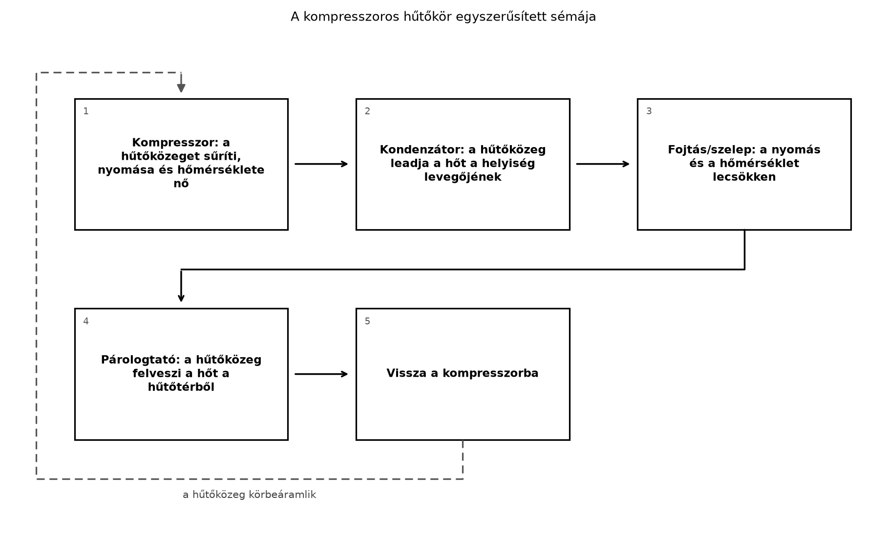

A hűtőberendezés nem kényelmi eszköz, hanem a cukrászati termékbiztonság egyik legfontosabb védővonala. Ha a főzött sárgakrémet, a mousse-t vagy a fagylaltkeveréket nem hűtjük le elég gyorsan, a készítés minden korábbi gondossága semmisülhet meg. Ebben az alfejezetben a hűtés elvét, a hűtőberendezések típusait, a sokkoló és a fagylaltfagyasztó működését, továbbá a tárolási hőmérsékletek ellenőrzését tanuljuk meg.
Képzeld el a következő műhelyhelyzetet: péntek délután van, a cukrászda esküvői tortát készít. A frissen főzött vaníliakrém 75 °C-os, és a konyhában 28 °C van. Ha a dolgozó forrón beteszi a hűtőkamrába, a kamra hőmérséklete megemelkedik, a többi tejszínes termék felmelegszik, és a krém órákig a mikrobák számára kedvező „veszélyes zónában” marad. A vendég másnap romlott vagy megbetegedést okozó terméket kaphat. A megfelelő hűtőberendezés ismerete, a hőmérséklet-ellenőrzés és a gyorshűtés ezért nem papírmunka, hanem élet- és üzletvédelem.
A kompresszoros hűtőkör úgy működik, mint egy körben mozgó szállítórendszer: a hűtőközeg a hűtőtérben hőt vesz fel, majd a helyiség felé leadja. A következő diagram a négy fő lépést mutatja.

A hűtőgép tehát nem „hideget termel”, hanem hőt von el. A párologtatóban a hűtőközeg felveszi a hűtőtér levegőjének hőjét, a belső tér lehűl. A kondenzátorban ugyanezt a hőt leadja a műhely levegőjének. Ezért érezhető meleg levegő a hűtőszekrény hátuljánál vagy a hűtőkamra kültéri egységénél.
Definíció. Hűtőberendezés: olyan gép vagy beépített berendezés, amely a környezeténél alacsonyabb hőmérsékletű teret tart fenn hőelvonással, és a felvett hőt a környezetnek leadja.
Definíció. Sokkoló (gyorshűtő/gyorsfagyasztó): olyan hőelvonó berendezés, amely a frissen készített, meleg élelmiszert rövid idő alatt biztonságos tárolási hőmérsékletre hűti, hogy a mikrobák szaporodásának kedvező hőmérsékleti tartományban töltött idő minél rövidebb legyen.
Definíció. Fagylaltfagyasztó (szakaszos fagyasztó, batch freezer): olyan gép, amely a fagylaltkeveréket keverés közben fagyasztja, apró jégkristályokat és levegőt juttat a keverékbe, és krémes, kanalazható állagot alakít ki.
Szabály. A hűtést igénylő élelmiszereket a termék biztonságához szükséges hőmérsékleten kell tárolni, és a hőmérsékletet rendszeresen ellenőrizni kell. A mérés eredményét naplózni kell, ha a HACCP-eljárás szerint az adott tárolás kritikus szabályozási pont (CCP).
A táblázat a cukrászatban gyakori hűtőberendezések jellemző üzemi hőmérsékleteit foglalja össze. Az értékek tanulási példák; a hatályos előírás vagy a gyártói adatlap eltérhet (ellenőrizendő: hatályos jogszabály/útmutató/gyártói adatlap).
| Berendezés | Jellemző üzemi hőmérséklet | Feladat a cukrászatban | Megjegyzés |
|---|---|---|---|
| Hűtőkamra | 0–4 °C | nagyobb készletek, félkész termékek, tejszín, vaj tárolása | bejárható, polcozott, gyakran külön hőmérővel |
| Hűtőszekrény | 1–5 °C | kisebb mennyiségek, munkatéri hűtés | ajtaját tartsuk zárva |
| Hűtővitrin | 0–5 °C | tejszínes késztermékek bemutatása és tárolása (a tejszínes/tojásos késztermékek tanulási felső határa 5 °C; ellenőrizendő: hatályos jogszabály/NÉBIH-útmutató) | üveges, páramentesítéssel |
| Mélyhűtő | −18 °C alatt | fagyasztott alapanyagok, félkész termékek, fagylaltok tárolása | csomagolva, jelölve, első be – első ki elv |
| Sokkoló (gyorshűtő) | +90-ről +3 °C alá 90–120 perc alatt | frissen készült krémek, mousse-ok, főzött töltelékek gyors lehűtése | maghőmérséklet-szondával |
| Fagylaltfagyasztó | −6 és −12 °C között kifagyasztás | fagylaltkeverék fagyasztása | utána mélyhűtőben −18 °C alá |
Továbbvitt eredmény. A gyorshűtés és a tárolási hőmérsékletek a Gépbiztonság: veszélyforrások, védőberendezések és biztonságos munkavégzés, a Gyümölcsök előkészítése, gyorsfagyasztás és vízelvonás, a Nemzetközi torták, szeletek és desszertek összeállítása, dermesztése és bevonása, valamint a A fagylalt összetevői és csoportjai alfejezetben térnek vissza. A hűtési lépés gyakran CCP, ezért a naplóvezetést ebben az alfejezetben is gyakoroljuk.
A hűtőkamra nagyobb, bejárható hűtött tér. A cukrászatban a kész tésztalapok, főzött krémek, tejszín, vaj, gyümölcs- és olajos magvas töltelékek tárolására szolgál. A belső hőmérsékletet általában digitális hőmérővel ellenőrizzük, és naponta többször naplózzuk. A termékeket úgy helyezzük el, hogy a hideg levegő körbe tudja járni: a polcok ne legyenek agyonzsúfolva, a hűtőrácsok ne takarják el a légáramlást.
A hűtőszekrény kisebb kapacitású, a munkatérben a gyakran használt anyagok hűtésére való. Az ajtaját csak rövid időre nyissuk ki, és a kivett alapanyagok után azonnal zárjuk vissza. A hűtőszekrényben is legyen belső hőmérő; a külső kijelző nem helyettesíti a belső mérést.
A hűtővitrin a vendégtérben lévő, üveges bemutatóhűtő. Tejszínes, krémes késztermékeket, tortaszeleteket és krémes süteményeket tárolunk benne eladásra. A vitrin hőmérséklete mellett a páralecsapódásra is figyelni kell: a lecsapódó víz a sütemények felületén romlást és csúnya külsőt okoz.
A mélyhűtő legalább −18 °C alatti hőmérsékletet tart. A fagyasztott alapanyagok (pl. gyorsfagyasztott gyümölcs, előre elkészített tésztalapok, fagylaltok) tárolása itt biztonságos. A fagyasztott élelmiszer csomagolását mindig jelölni kell a termék nevével, gyártási vagy fagyasztási dátummal, és felhasználhatósági idővel. Az első be – első ki (FIFO) elv szerint a régebbi tételeket előbb használjuk fel.
A sokkoló a frissen készített meleg élelmiszert rövid idő alatt hűti le. Két fő üzemmódja van:
A sokkoló előnye, hogy a termék a kritikus 5–60 °C közötti tartományban csak rövid ideig tartózkodik. A hagyományos hűtőkamrában ugyanez a hűlés órákig is eltarthat, mert a kamra nem erre a nagy hőterhelésre van méretezve. A sokkolóban a maghőmérséklet-szonda a termék belsejében méri a hőmérsékletet, így a ciklus csak akkor ér véget, amikor a mag is elérte a beállított értéket.
A helyes töltésnél az elpárologtató és a ventilátor (1) hideg levegőt fúj a tálcák közé (2); az edények laposak és fedetlenek, a tálcák között szabad hely marad (6). A tűszonda (3) a termék geometriai közepében mér, a kábel (4) a vezérlőhöz (5) vezet, amely a cél-maghőmérsékletig hűt. A hibás képen a zsúfolt, egymásra tett, lefedett mély edények elzárják a levegő útját, ezért a mag lassan hűl.
Gyakorlati szabály. A forró terméket soha ne helyezzük forrón a hűtőkamrába vagy hűtőszekrénybe. Ha sokkoló nincs, először hideg vizes jeges fürdővel vagy hűtőrácson, vékony rétegben hűtsük elő, és csak utána tegyük a hűtőtérbe.
A fagylaltfagyasztó a fagylaltkeveréket fagyasztja, miközben keverőlapát mozgatja. A levegő bekeverése növeli a térfogatot, és lágy, krémes állagot ad. A kifagyasztott fagylalt hőmérséklete jellemzően −6 és −12 °C között van; ez az állapot még formázható, tölthető. A formázott fagylaltot vagy kelyhet utána mélyhűtőben −18 °C alá kell hűteni, hogy stabilan tárolható legyen (ellenőrizendő: hatályos előírás/gyártói adatlap).
A fagylaltpasztőröző a fagylaltkeveréket hőkezeli, hogy a kórokozó mikrobákat elpusztítsa, majd gyorsan lehűti. A gyakorlatban elterjedt hőkezelési párok például: 65 °C 30 percig, 75 °C 10 percig vagy 85 °C 2–3 percig (ellenőrizendő: hatályos útmutató/gyártói adatlap). A pasztőrözött keveréket azonnal 4 °C alá hűtjük, és néhány órát érleljük, mielőtt a fagylaltfagyasztóba kerül.
A tárolóvitrin (fagylaltpult) a kész fagylaltok értékesítésére szolgál. A hőmérséklet jellemzően −14 és −18 °C között van (ellenőrizendő: hatályos előírás/gyártói adatlap). A fedőt nem tartjuk feleslegesen nyitva, mert a beáramló meleg levegő a fagylalt felületét olvasztja és újrakristályokat okoz.
A hűtőberendezés párologtatójára idővel dér és jég rakódik. A jégréteg szigetelőként viselkedik: csökkenti a hőátadást, ezért a kompresszor többet dolgozik, a belső hőmérséklet emelkedik. A jégmentesítés lehet manuális vagy automatikus. Manuális leolvasztáskor a berendezést áramtalanítjuk, az árut kivesszük, a jeget hagyjuk elolvadni vagy előírásszerűen eltávolítjuk, majd a belső teret tisztítjuk és fertőtlenítjük. Automatikus ciklusnál a leolvasztott víz a párolgási tálcába folyik.
A tisztítás előtt mindig áramtalanítani kell a berendezést. A belső felületeket, polcokat, ajtótömítéseket élelmiszerrel érintkezésre alkalmas tisztítószerrel mossuk, majd fertőtlenítjük. A páralecsapó csatornát és a szellőzőnyílásokat is tisztán kell tartani.
A gyakori ajtónyitás meleg, párás levegőt enged be. Ez három problémát okoz: hőmérséklet-emelkedést, páralecsapódást és jégképződést. A meleg levegő a hűtőteret felmelegíti, a pára a hideg felületeken lecsapódik, és a párologtatóra fagy. A kompresszor hosszabb ideig jár, az energiafogyasztás nő.
A túltöltés szintén gyakori hiba. Ha a polcok zsúfoltak, a hideg levegő nem tudja körbejárni a termékeket. A polc hátulján hideg van, elöl és középen meleg marad. A hőmérő a kamra egy pontján mér, így a zsúfolt középső részen a termék a mért értéknél melegebb lehet.
Számítás. Hűtőkamra napi hőmérsékletnaplója.
Adott egy hűtőkamra napi mérési sora:
| Idő | Mért hőmérséklet (°C) |
|---|---|
| 06:00 | 2,8 |
| 10:00 | 3,5 |
| 14:00 | 4,6 |
| 18:00 | 4,1 |
| 22:00 | 3,2 |
Keresett: a napi átlaghőmérséklet, és annak megállapítása, hogy előfordult-e túllépés 4,0 °C felett.
Képlet: a számtani átlag .
Behelyettesítés:
A 14:00-s (4,6 °C) és a 18:00-s (4,1 °C) mérés is meghaladta a 4,0 °C-os tanulási példa szerinti felső határt; a túllépés két egymást követő mérésben is jelentkezett, ami tartós hibára utal, nem egyszeri ajtónyitásra. Ilyenkor a naplóban jelölni kell a túllépést, és helyesbítő tevékenységet kell indítani: az ajtót zárva tartani, a hűtőkamrát ellenőriztetni, és a hőmérsékletet gyakrabban mérni. ∎
Számítás. Sokkoló gyorshűtési sebessége.
Adott: 10 kg főzött sárgakrém 78 °C-ról indul, a sokkoló 95 perc alatt 3 °C-ra hűti. Keresett: a hőmérséklet-csökkenés és az átlagos hűlési sebesség.
Képlet: a hőmérsékletváltozás , a sebesség , ahol az idő.
Behelyettesítés:
A krém átlagosan percenként közel 0,8 °C-kal hűl. Ez csak közelítő érték, mert a hűlés nem egyenletes: az elején gyorsabb, a hideghez közeledve lassul. A lényeg: a 95 perces ciklus alatt a krém rövid időt tölt az 5–60 °C közötti kockázatos tartományban. Ha ugyanazt a hűtőkamrában próbálnánk lehűteni, az 4–5 órát is igénybe vehetne, és a veszélyes zónában töltött idő miatt a mikrobák szaporodásának kockázata jelentősen megnő (ellenőrizendő: mikrobiológiai útmutató). ∎
Jogszabály. A 852/2004/EK rendelet (élelmiszer-higiénia) előírja, hogy a hűtést igénylő élelmiszereket olyan hűtőberendezésben kell tárolni, amely a termék biztonságához szükséges hőmérsékletet tartja. A hűtőtárolás hőmérsékletét ellenőrizni kell, és ha a HACCP-eljárás szerint CCP, az ellenőrzést dokumentálni kell. A konkrét hőmérsékleti határokat a hatályos előírások és a NÉBIH jó higiéniai gyakorlat útmutatói rögzítik (ellenőrizendő: hatályos jogszabály/útmutató). A mikrobiológiai kritériumokról szóló 2073/2005/EK rendelet a késztermékek biztonsági határértékeire ad keretet (ellenőrizendő: hatályos szöveg).
A hűtőberendezések üzemellenőrzésekor a következőket vizsgáljuk:
| Tünet | Lehetséges ok | Megelőzés / javítás |
|---|---|---|
| A hűtőkamra hőmérséklete délután 4 °C fölé emelkedik | Gyakori ajtónyitás, zsúfolt polcok, rossz ajtótömítés | Ajtónyitás csökkentése, átrendezés, tömítésellenőrzés, kamra leszervizeltetése |
| A párologtatón vastag jégréteg van | Elmaradt leolvasztás, párás levegő beáramlása | Rendszeres jégmentesítés, ajtó zárva tartása, automata leolvasztás ellenőrzése |
| A sokkoló hosszú ideig nem éri el a beállított maghőmérsékletet | Túltöltött tálca, a maghőmérséklet-szonda nem a termék közepén van, a ciklus rosszul van beállítva | A terméket vékony rétegben helyezzük a tálcára, a szondát a kritikus pontba szúrjuk, a ciklust a termék tömegéhez igazítjuk |
| A hűtőszekrényben a felső polc meleg, az alsó hideg | A hideg levegő lesüllyed, a felső polc túlterhelt, a légáramlás rossz | A hőmérséklet-érzékeny termékeket a hidegebb pontra tesszük, a polcokat nem zsúfoljuk |
| A fagylaltvitrinben a fagylalt felülete olvad, majd újrafagy | A fedőt gyakran nyitják, a vitrin hőmérséklete túl magas | Fedőt rövid ideig nyitni, hőmérsékletet ellenőrizni, a fagylaltot mélyebb pontra süllyeszteni |
Egy nyári hétvégén a cukrászda fagylaltot és krémes süteményeket is forgalmaz. A dolgozó délután észreveszi, hogy a hűtőkamra hőmérője 9 °C-ot mutat, pedig a beállított érték 3 °C. A kamrában tejszínes krémesek és több liter pasztőrözött fagylaltkeverék van. A dolgozó azonnal becsukja a kamra ajtaját, értesíti a műszakvezetőt, és áthelyezi a legérzékenyebb tejszínes termékeket a műhely hűtőszekrényébe, amely 4 °C alatt van. A hőmérsékletnapló szerint a túllépés körülbelül 2 órája állt fenn, mert a legutóbbi mérés még 3,7 °C volt. A krémeseket a belső hőmérséklet-ellenőrzés alapján selejtezni kell, mert a tejszínhabos termékeket hosszabb ideig 5 °C felett tárolták (ellenőrizendő: hatályos mikrobiológiai útmutató). A fagylaltkeveréket a HACCP-terv helyesbítő tevékenysége szerint kezelik: a visszahűtés önmagában nem teszi biztonságossá, ezért ha a túllépés ideje és hőmérséklete a tűréshatáron belül van, újrapasztőrözik és gyorsan visszahűtik, különben selejtezik (ellenőrizendő: üzemi HACCP-terv, NÉBIH-útmutató); a döntést és a tétel sorsát naplózzák. A kamra szervizelését kérik. A tanulság: a gyakori naplózás és a gyors döntés megakadályozta, hogy a sérült tételek a vendégekhez jussanak.
1. feladat (A). Definiáld röviden a sokkolót, és nevezd meg a hűtőkör négy fő elemét!
2. feladat (A). Egy másik hűtőkamra hőmérője reggel 6 órakor 2,8 °C-ot, este 6 órakor 4,6 °C-ot mutat. Számítsd ki a hőmérséklet-emelkedést! Állapítsd meg, hogy a napi érték elérte-e a 4,0 °C-os tanulási példa szerinti felső határt!
3. feladat (B). Hűtőnapló: 08:00 3,2 °C; 11:00 1,8 °C; 14:00 2,9 °C; 17:00 3,5 °C; 20:00 4,4 °C. Számítsd ki a napi átlagot, azonosítsd a túllépést, és javasolj helyesbítő tevékenységet!
4. feladat (B). Sokkoló gyorshűtés: 10 kg sárgakrém 78 °C-ról 3 °C-ra hűl 95 perc alatt. Számítsd ki a hőmérséklet-csökkenést és az átlagos hűlési sebességet °C/percben! Miért veszélyesebb ugyanezt a hűtőkamrában 5 óra alatt lehűteni?
5. feladat (C). Hibaelemzés: egy dolgozó a forró vaníliakrémet forrón beteszi a hűtőkamrába. A kamra hőmérséklete 30 perc alatt 3 °C-ról 11 °C-ra emelkedik, és a többi krém felületén pára csapódik le. Melyek a veszélyek? Mit kell tenni azonnal? Hogyan előzhető meg?
6. feladat (D). Gyakorlati feladat: Ellenőrizd otthon vagy a tanműhelyben egy hűtőszekrény belső hőmérsékletét három ponton (felső, középső és alsó polc) reggel és este! Tölts ki egy egyszerű naplót: mérési idő, mérési pont, mért hőmérséklet, megjegyzés. Értékeld az eredményt: hol tér el a hőmérséklet? Javasolj átrendezést vagy javítást!
Önellenőrzés – válaszok
1. feladat (A). A sokkoló olyan hőelvonó berendezés, amely a frissen készített meleg élelmiszert rövid idő alatt biztonságos tárolási hőmérsékletre hűti. A hűtőkör négy fő eleme: kompresszor, kondenzátor, fojtás/szelep, párologtató.
2. feladat (A). Adott:
,
.
Keresett:
.
Képlet:
.
Behelyettesítés:
.
A napi érték elérte a 4,0 °C-ot, mert 4,6 °C > 4,0 °C. Jelezni kell a
naplóban.
3. feladat (B). Adott mérések: 3,2; 1,8; 2,9; 3,5;
4,4 °C.
Napi átlag:
A 20:00-s mérés 4,4 °C, ami meghaladja a 4,0 °C-ot, tehát túllépés van.
Helyesbítő tevékenység: az ajtót zárva tartani, a hűtőkamra működését
ellenőrizni, a termékeket szükség esetén áthelyezni, a hőmérsékletet
sűrűbben mérni, és a túllépést a naplóban dokumentálni.
4. feladat (B). Adott: kezdeti hőmérséklet 78 °C,
végső 3 °C, idő 95 perc.
Hőmérséklet-csökkenés:
Átlagos hűlési sebesség:
A hűtőkamrában 5 órán át tartó lassú hűlés közben a krém hosszú ideig az
5–60 °C közötti tartományban van, ahol a mikrobák szaporodhatnak. A
sokkoló rövid ciklusa ezt a kockázatot csökkenti. Az érték tanulási
példa, a valóságban a hűlési sebesség nem állandó.
5. feladat (C). Veszélyek: a kamra hőmérséklete 11 °C-ra emelkedik, tehát a társáru is a veszélyes zónába kerül. A lecsapódó pára a termékek felületére jut, ami vizet ad a mikrobáknak, és keresztszennyezést okozhat. Azonnali teendő: a forró krémet kivesszük, és sokkolóba vagy jeges fürdőbe tesszük; a kamra ajtaját zárva tartjuk; a felmelegedett termékeket külön kell választani és ellenőrizni. Ha a hőmérsékletet hosszabb időre túllépték, a tejszínes vagy tojásos készítményeket selejtezni kell (ellenőrizendő: hatályos útmutató). Megelőzés: forró terméket soha ne tegyünk hűtőkamrába; előhűtés vagy sokkoló használata.
6. feladat (D). Nincs egyetlen helyes mérési sor. Értékelési szempontok: a mérési pontok megfelelően vannak-e megadva; a reggeli és esti értékek rögzítése megtörtént-e; a felső polc gyakran melegebb, az alsó hidegebb; a 2–3 °C-nál nagyobb eltérés esetén átrendezés vagy a hűtő beállításának módosítása indokolt. A megoldásban szerepelnie kell annak, hogy a hűtőszekrény belső hőmérsékletét 4 °C alatt kell tartani (tanulási példa, ellenőrizendő).
A hűtőberendezés a cukrászati termékbiztonság egyik alapvető eszköze. A kompresszoros hűtőkör négy fő eleme a kompresszor, a kondenzátor, a fojtás/szelep és a párologtató. A hűtőkamra, hűtőszekrény, hűtővitrin és mélyhűtő különböző tárolási feladatokat látnak el. A hűtőkamra és hűtőszekrény jellemzően 0–5 °C-on üzemel, a mélyhűtő −18 °C alatt tartja a fagyasztott árut; ezek tanulási példák, a hatályos előírás ettől eltérhet (ellenőrizendő). A sokkoló gyorshűtő üzemmódja a meleg krémet 90–120 perc alatt 3–5 °C alá hűti, a gyorsfagyasztó −18 °C alá. A fagylaltfagyasztó a keveréket keverés közben −6 és −12 °C közé fagyasztja, majd a kész fagylaltot −18 °C alá hűtjük. A hőmérsékletet naponta többször mérni és naplózni kell; CCP esetén a túllépés helyesbítő tevékenységet igényel. A jégmentesítés, a tisztítás, a zárva tartott ajtó és a túltöltés elkerülése mind a biztonságos hőmérséklet fenntartását szolgálja. A gyorshűtés elve a későbbi fagylalt- és dermesztett desszerttechnológiákban is visszatér.
A szöveg az alábbi forrástípusokra támaszkodik, de azokat elsősorban a kiadás előtt célzottan ellenőrizni kell:
Ellenőrizendő pontok: